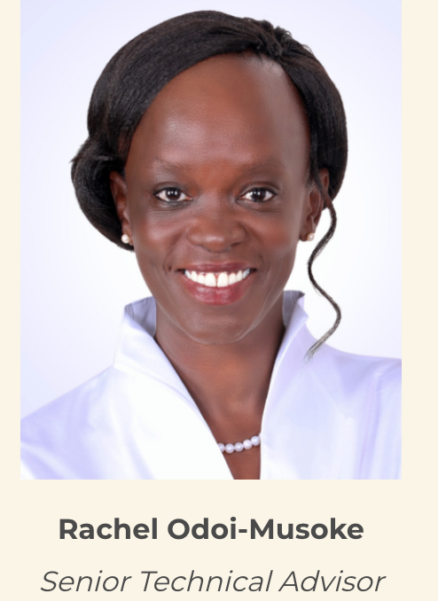
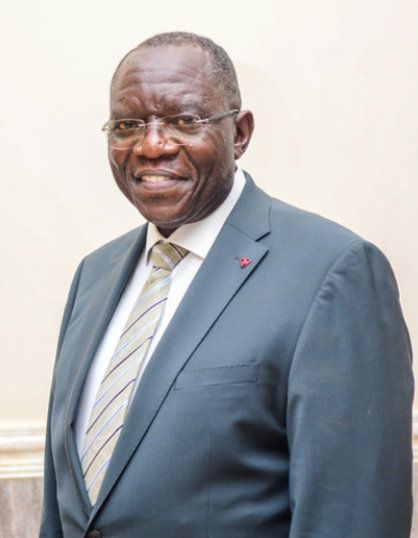
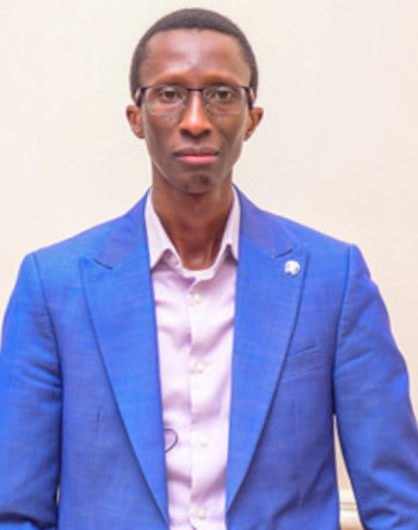
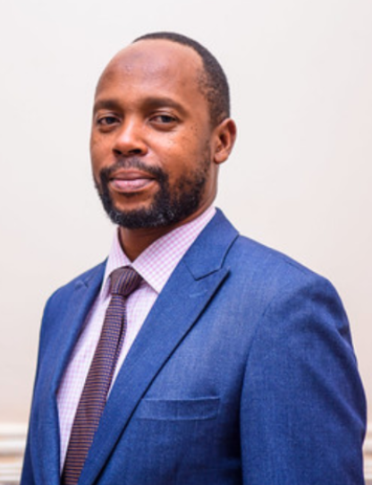
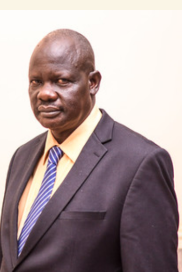
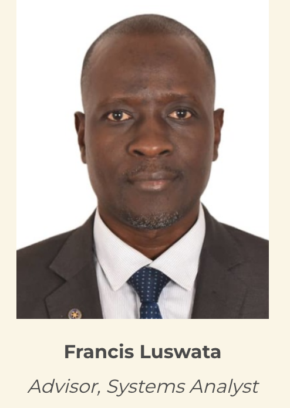
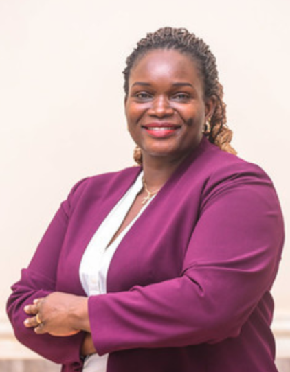
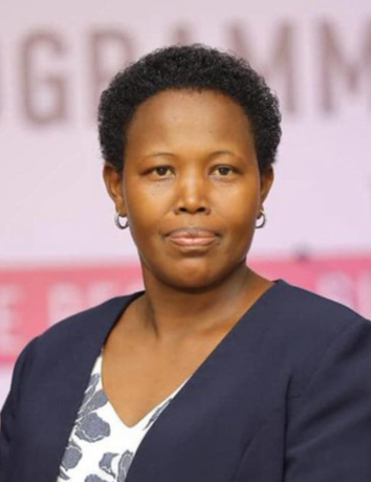
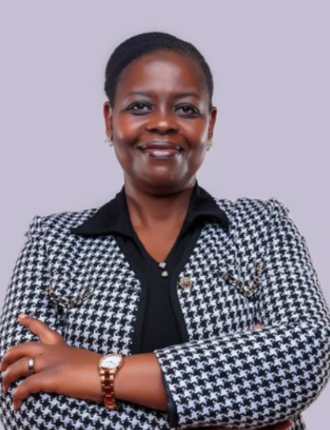
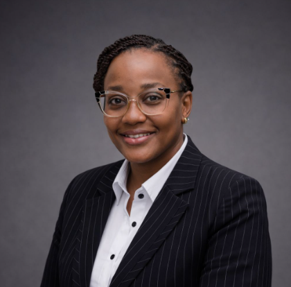

The JLOS Secretariat provides coordination, technical and administrative support to the 18-member sector programme. Click on any team member to read their full biography.

RO
Rachel Odoi-Musoke
Senior Technical Advisor
Rachel Odoi-Musoke is the Senior Technical Advisor to the Governance and Security Programme, where she leads a multidisciplinary team advancing access to justice and the rule of law through institutional development, innovation, and reform. She is an Advocate of the Courts of Judicature of Uganda with 24 years of legal practice. She holds a Bachelor of Laws from Makerere University, a Diploma in Legal Practice from the Law Development Centre, and a Master of Laws from the University of the Witwatersrand. Her professional experience spans human rights advocacy, legal and policy reform, and justice sector reform. She is deeply committed to human rights, with particular focus on women, children, and environmental protection.

SW
Sam Rogers Wairagala
Deputy Senior Technical Advisor & Advisor, M&E
Sam Rogers Wairagala is the Deputy Senior Technical Advisor at the Governance and Security Programme Secretariat and also serves as Technical Advisor for Monitoring and Evaluation. He holds a Master of Business Administration from ESAMI, a Master's in Economic Policy Management, and a Bachelor's degree in Economics from Makerere University. With over 20 years of experience as an economist, he has played a central role in programme management, policy formulation, and strategy development. He is a strong advocate of results-based management and has been instrumental in designing award-winning innovations improving access to justice for indigent and vulnerable populations.
LL
Lucy Ladira
Advisor, Criminal Justice
Lucy Ladira has over 20 years of experience in law enforcement, prosecution, and justice sector programming. She served eight years as a Prosecutor and has spent the last 12 years as a Criminal Justice Advisor within the JLOS Secretariat. She holds a Master of Laws in International Human Rights from the Transitional Justice Institute, University of Ulster. Since 2018, she has led the coordination of special court sessions fast-tracking disposal of sexual and gender-based violence cases through a multi-institutional national initiative. She is driven by purpose and service to humanity.

EK
Edgar Kuhimbisa
Advisor, E-Governance
Edgar Kuhimbisa is an E-Governance Expert with sixteen years of experience in justice reform programming. He is the technical lead at the JLOS Secretariat coordinating e-governance and digital innovation initiatives across Uganda. His work spans the design and development of digital transformation interventions across multiple government ministries, departments and agencies, leveraging technology to promote good governance, security and enhanced access to justice. He works with development partners, civil society and private sector to create an inclusive digital ecosystem responsive to the marginalized and vulnerable.

MM
Musa Modoi
Advisor, Human Rights & Accountability
Musa Modoi is the Advisor for Human Rights and Accountability at the Governance and Security Programme, with over 20 years of experience in governance and development law. He provides strategic advice on policy and legislative development, national planning and Uganda's socio-economic transformation agenda. He leads national performance accountability processes and international state reporting. He is an Advocate of the Courts of Judicature of Uganda and holds a Master's degree in Anti-Corruption Studies (summa cum laude) from the International Anti-Corruption Academy in Vienna, plus an LL.M and LL.B from Makerere University.

OL
Odoch Tonny Lagamber
Financial Management Specialist
Odoch Tonny Lagamber is a Financial Management Specialist with over two decades of experience in public financial management and donor-funded programmes. He provides strategic leadership in sector-wide financial management, accountability, budgeting and reporting at the JLOS Secretariat. He holds a Bachelor of Commerce (Honours) from Makerere University and is professionally qualified as a member of ACCA, ICSA, and CIPS (UK). His expertise includes budget planning, financial systems design, audit compliance, value-for-money analysis and donor reporting.

FL
Francis Luswata
Advisor, Systems Analyst
Francis Luswata is an Advisor for Planning, Budgeting and Reporting at the Governance and Security Programme Secretariat, with close to 20 years of experience in strategic planning, budgeting, reporting and systems analysis. He holds a Master's degree in Statistics (Computing) from Makerere University, is ACCA qualified, and holds Bachelor's degrees in Statistics and in Finance and Accounting from Oxford Brookes University. Prior to his current role, he served as an Assistant Lecturer in Statistics and Computer Science at Mbarara University.

MA
Margaret Ajok
Advisor, Transitional Justice
Margaret Ajok is a lawyer with expertise in international law, human rights, gender, transitional justice and alternative justice mechanisms. She is an executive member of the African Union Women for Transitional Justice Platform and serves as a Gender and Transitional Justice Expert on the Continental Reference Group on Transitional Justice in Africa (2024–2027). With over 12 years as a Transitional Justice Advisor to the Government of Uganda, she was instrumental in developing Uganda's National Transitional Justice Policy. She also founded the Center for Reparation and Rehabilitation to support survivors of conflict in Northern Uganda.
BK
Dr. Barbara Kitui
Resource Person, Family Justice
Dr. Barbara Kitui is a governance and public sector justice reform expert with over 17 years of experience. Her work has contributed to improved service delivery in Uganda's justice sector, with particular focus on governance, human rights, land governance and access to justice. She played a key role in developing JLOS policy and operational documents including the Diversion Guidelines, Child Justice Strategy, and Disability Strategy. She serves on the Uganda Justice for Children Steering Committee and holds a Doctor of Laws and Master of Laws in Human Rights and Democratisation from the University of Pretoria.

GC
Grace Angelimo Chelimo
Resource Person, Land Justice
Grace Angelimo Chelimo is a lawyer and access to justice specialist with over 15 years of experience across Uganda's justice sector. She currently serves as Resource Person for Land Justice at the Governance and Security Programme Secretariat, supporting land justice reforms and the Democratic Processes Sub-Programme. She holds a Master's Degree in Human Rights, Social Justice and Development from ISS of Erasmus University Rotterdam and a Bachelor of Laws from Uganda Christian University. She previously coordinated the national Justice for Children Programme and served as a Human Rights Officer at the Uganda Human Rights Commission.

BK
Brenda Patience Kyomugisha
National Coordinator, Justice For Children
Brenda Patience Kyomugisha is a social justice and child protection specialist with over a decade of experience advancing child-friendly justice systems. She serves as National Coordinator for the Justice for Children Programme (UNICEF-funded), providing strategic leadership to ensure children in conflict with the law are treated in line with national legislation and international child rights standards. She has led major initiatives including implementation of the EU SUPREME Programme in criminal justice institutions, refugee settlements and host communities. Her expertise spans juvenile justice, diversion, restorative justice and alternative dispute resolution.

GK
Gloria Kemigisha
Resource Person, Communications & Public Relations
Gloria Kemigisha is a communications and public relations professional with over 10 years of experience across public relations, customer experience, journalism and international development. She has worked with government institutions, development partners and private sector organisations, supporting strategic communication, brand management, stakeholder engagement and service delivery improvement. Her background includes roles with the Ministry of Works and Transport, the World Bank, and Andela Uganda. She is passionate about women's empowerment, financial literacy, mentorship and entrepreneurship.